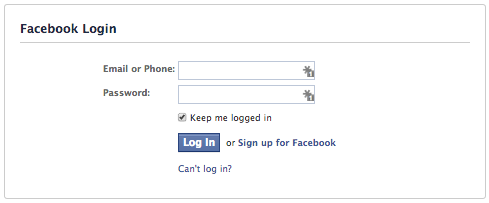

Week Seven - Technical blog
19 Jul 2014
What is SQL injection?
Most websites nowadays are dynamic rather than static - they offer functionality which persists throughout multiple pages such as shopping baskets, user accounts, friends lists, etc. This persistence is most often implemented using databases, which are accessed and altered via SQL (Structured Query Language).
Most websites also have various forms to allow the user to enter data: login pages, for example, where the user would enter their username and password. These forms can be used to pass SQL code into the back-end SQL queries to alter them in malicious ways.
How does it work?
The login page above allows a user to enter their username and password. On submitting the form, the username and password (actually, an encrypted version of the password) are sent to the website and queried against the database to check if they match. Assuming the site was using ruby in the back-end, it may build an SQL query like so:
query = "SELECT * FROM users WHERE username='#{username}' AND password='#{password}';"If the user were to enter "someguy" for the username and "pa55w0rd" for the password, this resulting query would be:
SELECT * FROM users WHERE username='someguy' AND password='pa55w0rd';If the password is correct for the given username, the result of this query will be a single row containing the user's account details which will be an indication to the site to allow logon. If it is incorrect, no rows will be returned and the website will display an error to the user.
In this example (and on many sites), the vulnerability is due to the way the site is combining the SQL query with the data entered by the user. If there is no restriction on what characters can be entered by the user (and therefore added into the query), the query can be changed using the login form. If the user were to enter "' OR '1'='1" in the password field, it would result in the following SQL query:
query = "SELECT * FROM users WHERE username='#{username}' AND password='#{password}';" SELECT * FROM users WHERE username='someguy' AND password='' OR '1'='1';Since the latter condition will always be true, the result of this query will be the entirety of the users database - depending on how the back-end used this data, this could allow the user to login as anyone.
SQL injection can also be used to change the data by terminating queries and executing new ones. For example, if the user entered the password "'; UPDATE users SET password='password' WHERE username='admin":
query = "SELECT * FROM users WHERE username='#{username}' AND password='#{password}';" SELECT * FROM users WHERE username='someguy' AND password=''; UPDATE users SET password='password' WHERE username LIKE '%admin%';The above query would change the 'admin' account password to 'password', allowing the attacker to easily login and start making more destructive changes.
SQL injection could also be used to delete data entirely (see also, XKCD - Little Bobby Tables):
query = "SELECT * FROM users WHERE username='#{username}' AND password='#{password}';" SELECT * FROM users WHERE username='someguy' AND password=''; DROP TABLE users;--The above query will entirely delete the users database - hopefully they had backups!
How can it be prevented?
The most basic method of prevention is to sanatize data before it is integrated with a SQL query: this most commonly involves escaping certain characters, such as single quotes. In our example above, escaped characters will prevent the password string from altering the SQL query:
SELECT * FROM users WHERE username='someguy' AND password='\' OR \'1\'=\'1';The query above would return zero results, unless of course the users password was actually "\' OR \'1\'=\'1".
Parameterized statements can also be used to prevent SQL injection - these work by keeping the user-entered data separate from the SQL query and pass them in like parameters into a method:
query = db.prepare "SELECT * FROM users WHERE username=? AND password=?;" query.execute username, passwordType and pattern checking can be used to confirm that data being passed in is of a specific type or matches a given pattern (e.g. ##/##/#### for date of birth, strings with certain allowable characters for usernames).
Finally, limited access privileges can be granted to different areas of the application: for example, only allowing 'SELECT' queries to be executed from the login form.